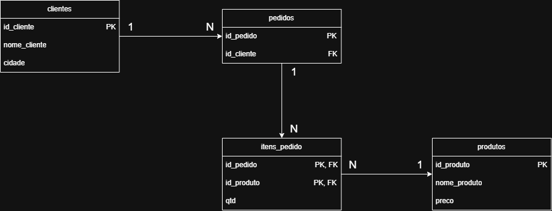

Henrick de Souza
[Ciências da computação, 2º semestre]
Como a segunda e a terceira formas normais (2FN e 3FN) acabam com a redundância e com as anomalias de atualização, inserção e exclusão.
Imagine uma papelaria pequena que registra tudo em uma única tabela. Um dia, o dono sobe o preço do caderno de 18,00 para 19,00 e precisa corrigir o valor em dezenas de linhas. Se esquecer uma, o mesmo caderno passa a ter dois preços. Neste artigo, vamos entender por que isso acontece e como separar a tabela em partes menores.
Você já sabe programar e conhece o básico de SQL. Vamos partir de tabelas e consultas e só depois dar nome às formas normais. Todos os dados são fictícios.
| id_pedido | id_produto | nome_produto | preco | qtd | id_cliente | nome_cliente | cidade |
|---|---|---|---|---|---|---|---|
| 1001 | P01 | Caderno 96f | 18,00 | 2 | C01 | Ana Souza | Suzano |
| 1001 | P02 | Caneta azul | 3,50 | 10 | C01 | Ana Souza | Suzano |
| 1002 | P01 | Caderno 96f | 18,00 | 1 | C02 | Bruno Lima | Mogi |
| 1003 | P02 | Caneta azul | 3,50 | 5 | C01 | Ana Souza | Suzano |
Para testar, usamos PostgreSQL 16
-- PostgreSQL 16: a planilha como uma única tabela
CREATE TABLE planilha (
id_pedido INT,
id_produto TEXT,
nome_produto TEXT,
preco NUMERIC(8,2),
qtd INT,
id_cliente TEXT,
nome_cliente TEXT,
cidade TEXT,
PRIMARY KEY (id_pedido, id_produto)
);
INSERT INTO planilha VALUES
(1001,'P01','Caderno 96f',18.00, 2,'C01','Ana Souza','Suzano'),
(1001,'P02','Caneta azul', 3.50,10,'C01','Ana Souza','Suzano'),
(1002,'P01','Caderno 96f',18.00, 1,'C02','Bruno Lima','Mogi'),
(1003,'P02','Caneta azul', 3.50, 5,'C01','Ana Souza','Suzano');Repare que cada célula tem um único valor, sem listas dentro dela. Isso já é a 1ª forma normal (1FN): valores atômicos. Nosso problema começa depois dela.
Uma anomalia é um comportamento indesejado causado pela redundância. Rode cada comando e observe.
O dono corrige o preço do caderno, mas só na primeira linha em que ele aparece:
UPDATE planilha SET preco = 19.00
WHERE id_produto = 'P01' AND id_pedido = 1001; -- esquecemos o pedido 1002
SELECT DISTINCT id_produto, preco FROM planilha WHERE id_produto = 'P01';
-- retorna 18.00 e 19.00: dois preços para o mesmo produtoChegou um produto novo, ainda sem vendas. Onde cadastrá-lo?
INSERT INTO planilha (id_produto, nome_produto, preco)
VALUES ('P03', 'Lápis HB', 1.20);
-- ERRO: id_pedido é parte da chave primária e não pode ser nuloO pedido 1002 foi cancelado:
DELETE FROM planilha WHERE id_pedido = 1002;
SELECT * FROM planilha WHERE id_cliente = 'C02';
-- 0 linhas: perdemos também o cadastro do Bruno LimaUma chave primária é a coluna (ou o conjunto de colunas) que identifica cada linha de forma única. Na nossa tabela, é a dupla (id_pedido, id_produto), pois um pedido pode ter vários produtos.
Uma dependência funcional significa que, sabendo o valor de uma coluna, você sabe o valor de outra. Escrevemos id_produto → nome_produto: dado o código P01, o nome é sempre "Caderno 96f".
Uma tabela está na 2ª forma normal (2FN) quando está na 1FN e nenhuma coluna comum depende de apenas parte de uma chave composta. Aqui, nome_produto e preco dependem só de id_produto, e não do pedido inteiro. É uma dependência parcial, e a saída é criar uma tabela produtos.
Uma tabela está na 3ª forma normal (3FN) quando está na 2FN e nenhuma coluna comum depende de outra coluna comum. Aqui, id_pedido → id_cliente → nome_cliente: o nome depende do cliente, e o cliente depende do pedido. É uma dependência transitiva, e a saída é criar uma tabela clientes.
Seja R uma relação com conjunto de dependências funcionais F. R está na 2FN se, para toda dependência X → A em F com A não primário, X não é subconjunto próprio de nenhuma chave candidata. R está na 3FN se, para toda X → A em F, vale ao menos uma condição: X é superchave, ou A é atributo primário (faz parte de alguma chave candidata). Essa definição vem do trabalho de Codd e de Bernstein; ela é um pouco mais permissiva que a BCNF.
Na figura, cada caixa é uma tabela. PK marca a chave primária (a coluna que identifica cada linha) e FK marca a chave estrangeira (a coluna que aponta para a chave de outra tabela). Os símbolos 1 e N mostram a quantidade em cada lado da ligação: um cliente faz muitos pedidos, um pedido tem muitos itens e um produto aparece em muitos itens.

-- PostgreSQL 16: modelo na 3FN
CREATE TABLE clientes (
id_cliente TEXT PRIMARY KEY,
nome TEXT NOT NULL,
cidade TEXT NOT NULL
);
CREATE TABLE produtos (
id_produto TEXT PRIMARY KEY,
nome TEXT NOT NULL,
preco NUMERIC(8,2) NOT NULL
);
CREATE TABLE pedidos (
id_pedido INT PRIMARY KEY,
id_cliente TEXT NOT NULL REFERENCES clientes
);
CREATE TABLE itens_pedido (
id_pedido INT REFERENCES pedidos,
id_produto TEXT REFERENCES produtos,
qtd INT NOT NULL,
PRIMARY KEY (id_pedido, id_produto)
);
INSERT INTO clientes VALUES ('C01','Ana Souza','Suzano'),('C02','Bruno Lima','Mogi');
INSERT INTO produtos VALUES ('P01','Caderno 96f',18.00),('P02','Caneta azul',3.50),('P03','Lápis HB',1.20);
INSERT INTO pedidos VALUES (1001,'C01'),(1002,'C02'),(1003,'C01');
INSERT INTO itens_pedido VALUES (1001,'P01',2),(1001,'P02',10),(1002,'P01',1),(1003,'P02',5);Para reconstruir a planilha original, basta um JOIN:
SELECT p.id_pedido, pr.id_produto, pr.nome, pr.preco, i.qtd, c.id_cliente, c.nome, c.cidade
FROM itens_pedido i
JOIN pedidos p ON p.id_pedido = i.id_pedido
JOIN produtos pr ON pr.id_produto = i.id_produto
JOIN clientes c ON c.id_cliente = p.id_cliente;E as três anomalias desaparecem: o preço do caderno muda em uma linha (UPDATE produtos ...); o Lápis HB (P03) já está cadastrado sem nenhuma venda; e cancelar o pedido 1002 não apaga o cliente C02.
O preço mudou, e o histórico? No modelo acima, alterar o preço em produtos muda o valor de pedidos antigos quando você refaz a consulta. Em uma loja real, o preço cobrado na venda deve ser guardado em itens_pedido (por exemplo, preco_unitario). Isso parece redundância, mas é outro fato: o preço naquela venda.
id sequencial, a dependência parcial não desaparece, só fica escondida. Continue verificando as dependências.Pegue um formulário ou planilha do dia a dia (com dados inventados), liste as dependências funcionais e tente chegar às tabelas. Pratique com PostgreSQL ou SQLite e desenhe o diagrama entidade-relacionamento antes de escrever o CREATE TABLE.
Imagens e diagramas: autoria própria do grupo, licença [CC BY 4.0].